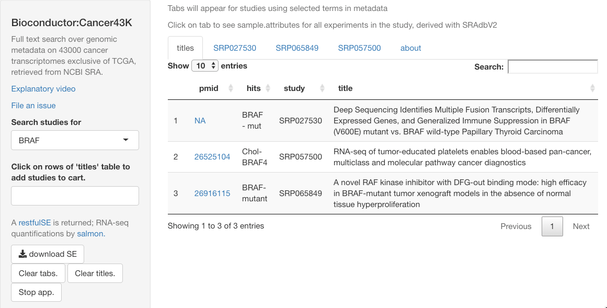
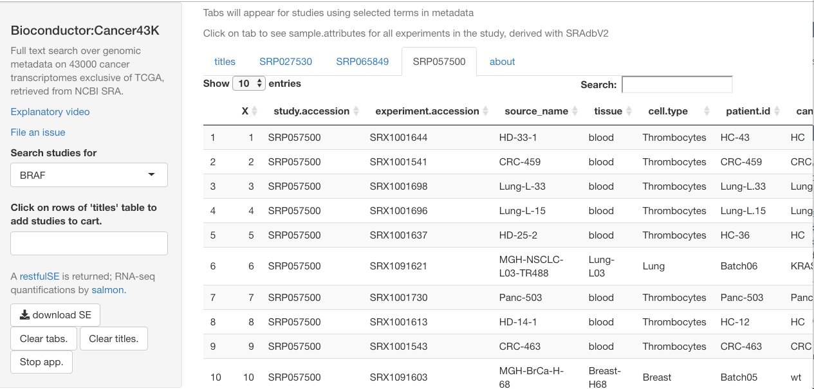
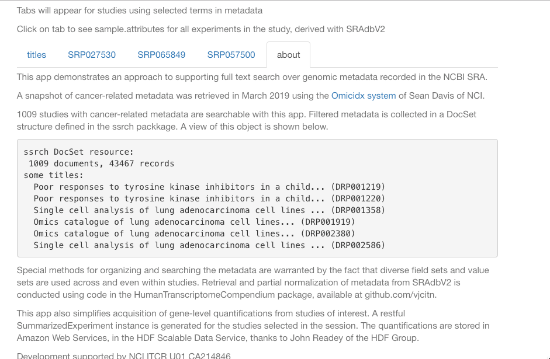

Vincent Carey Biostatistics/Genome Bioinformatics

Vince Carey's team works on Bioconductor, NCI ITCR, NHGRI AnVIL, and various NIH clinical trials
Access to 43000 cancer-related transcriptomes not in TCGA
This is a result of a collaborative effort with Dr Sean Davis of NCI Center for Cancer Research and John Readey of the HDF Group. The basic idea is that Sean’s OmicIDX and BigRNA APIs have been used to create snapshots of cancer-related RNA-seq studies and associated metadata.
The quantifications were set up for global distributon via the HDF Scalable Data Service (HSDS), and SummarizedExperiment interfaces were set up via the restfulSE package.

The user can click on a study to add it to the “cart” which will define a RESTful SummarizedExperiment for downloading. The SummarizedExperiment will include data and metadata from all selected studies, but assay data will not be downloaded. Instead, the assay data are referenced through the DelayedArray protocol, retrieved, ultimately, as needed via HSDS.
Tab panels provide searchable tables of all available sample-level metadata.

The “about” tab describes some details of metadata handling.
